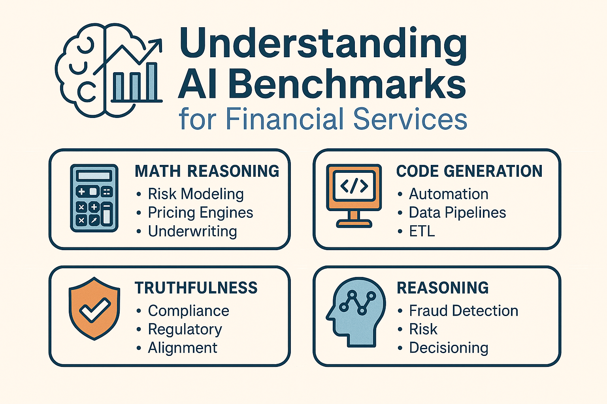

Understanding AI Benchmarks - FS angle
In a sector where precision is paramount and missteps are costly, choosing the right AI model is far more than a technical preference. It’s a matter of sound judgement. This piece cuts through the clutter to show which benchmarks genuinely matter for financial services, and which models are truly up to the task.
Introduction
AI model benchmarks can feel abstract with publications using a sea of acronyms like GSM8K, MMLU, TruthfulQA, and HumanEval. But for financial services, these benchmarks map directly to real operational needs: risk modeling, compliance, automation, fraud detection, and customer experience. This post tries to break down each benchmark in plain language, explains why it matters, and ranks them by financial‑services relevance. All data is sourced from publicly available model evaluations from Microsoft, OpenAI, Anthropic, Meta, and academic benchmark suites.
Why Benchmarks Matter in Financial Services
Financial institutions rely on AI for:
- Risk & pricing models
- Regulatory compliance & auditability
- Fraud detection & anomaly reasoning
- Customer support automation
- Developer productivity & quant tooling
Benchmarks help us understand which models excel at:
- Math reasoning
- Code generation
- Truthfulness
- Logical reasoning
- Document understanding
These capabilities directly map to FS workflows.
Benchmark Table (Sorted by FS Relevance)
Below is the full benchmark table, sorted from most relevant → least relevant for financial services.
| Benchmark | Category | What It Tests | Real‑World FS Usage | Top 5 Models (Best → Worst) |
|---|---|---|---|---|
| GSM8K CoT | Math Reasoning | Step-by-step math logic | Risk modeling, pricing engines, underwriting, portfolio optimization | Phi‑3‑Medium, Phi‑3‑Small, Claude Sonnet, GPT‑3.5, Phi‑3‑Mini |
| HumanEval | Code Generation | Writing functions | Automation, ETL, quant infra, API wrappers | Claude Sonnet, GPT‑3.5, Llama‑3, Phi‑3‑Small, Phi‑3‑Mini |
| MBPP | Code Reasoning | Solving coding problems | Backtesting, feature engineering, data validation | Claude Sonnet, GPT‑3.5, Phi‑3‑Medium, Phi‑3‑Small, Llama‑3 |
| TruthfulQA | Safety | Avoiding hallucinations | Compliance, regulatory reporting, audit trails | Claude Sonnet, Phi‑3‑Medium, GPT‑3.5, Phi‑3‑Small, Mixtral |
| ARC Challenge | Reasoning | Hard logic | Fraud detection, scenario analysis, stress testing | Claude Sonnet, Phi‑3‑Medium, Phi‑3‑Small, GPT‑3.5, Mixtral |
| ARC Easy | Reasoning | Basic logic | Decision trees, rule-based automation | Phi‑3‑Medium, Phi‑3‑Small, Claude Sonnet, GPT‑3.5, Mixtral |
| BoolQ | NLP + Reasoning | Yes/no with context | Customer support, policy Q&A | Claude Sonnet, Phi‑3‑Medium, Phi‑3‑Small, Mixtral, Llama‑3 |
| CommonsenseQA | Commonsense | Everyday logic | Fraud heuristics, intent detection | Claude Sonnet, Phi‑3‑Medium, Phi‑3‑Small, Mixtral, Llama‑3 |
| ANLI | NLP | Contradiction detection | Contract review, policy comparison | Claude Sonnet, Phi‑3‑Medium, Llama‑3, Mixtral, Phi‑3‑Small |
| HellaSwag | NLP | Sentence prediction | Email drafting, workflow completion | Phi‑3‑Medium, Claude Sonnet, Phi‑3‑Small, Llama‑3, Mixtral |
| WinoGrande | NLP | Pronoun resolution | KYC/AML extraction, document parsing | Claude Sonnet, Phi‑3‑Small, Phi‑3‑Medium, GPT‑3.5, Mixtral |
| MMLU | Knowledge | Academic knowledge | Analyst training, research copilots | Phi‑3‑Medium, Phi‑3‑Small, Claude Sonnet, GPT‑3.5, Mixtral |
| BigBench Hard | Reasoning | Abstract reasoning | Agentic workflows, complex planning | Phi‑3‑Medium, Phi‑3‑Small, Mixtral, GPT‑3.5, Phi‑3‑Mini |
| AGI Eval | General Reasoning | Broad intelligence | Autonomous workflows | GPT‑3.5, Claude Sonnet, Phi‑3‑Medium, Mixtral, Phi‑3‑Small |
| PIQA | Physical Reasoning | Object affordances | UX reasoning | Claude Sonnet, Phi‑3‑Medium, Phi‑3‑Small, GPT‑3.5, Mixtral |
| Social IQA | Social Reasoning | Social situations | Customer empathy, HR bots | Claude Sonnet, Phi‑3‑Medium, Phi‑3‑Small, Mixtral, Llama‑3 |
| TriviaQA | Knowledge | Trivia recall | Search assistants | GPT‑3.5, Mixtral, Claude Sonnet, Llama‑3, Gemma |
| MedQA | Medical | Medical exam questions | Not relevant to FS | Claude Sonnet, GPT‑3.5, Mixtral, Llama‑3, Phi‑3‑Medium |
Key Insights for Financial Services

1. Math + Code Benchmarks Matter Most
GSM8K, HumanEval, and MBPP directly correlate with:
- Pricing models
- Risk engines
- Quant research
- Automation pipelines
Models like Phi‑3‑Medium and Claude Sonnet consistently lead here.
2. Truthfulness Is Critical for Compliance
TruthfulQA is a strong predictor of:
- Reduced hallucinations
- Better regulatory alignment
- Safer customer facing outputs
Claude Sonnet and Phi‑3‑Medium dominate this category.
3. Reasoning Benchmarks Predict Fraud & Risk Performance
ARC Challenge and CommonsenseQA map to:
- Fraud detection
- Scenario analysis
- Edge-case reasoning These are essential for FS risk teams.
Conclusion
Benchmarks aren’t abstract — they map directly to financial workflows. Models like Phi‑3‑Medium, Claude Sonnet, and GPT‑3.5 consistently perform well across the categories that matter most for financial services.
While evaluating models for FS use cases, one will prioritize:
- Math reasoning
- Code generation
- Truthfulness
- Hard reasoning
- Document NLP
This gives you the strongest operational ROI.
The benchmark results, model comparisons, and financial‑services relevance assessments in this post are based on publicly available information from model providers and academic benchmark suites. They are intended for informational and educational purposes only.
References
- Microsoft. Phi‑3 Model Family Benchmarks.
- OpenAI. GPT‑3.5 and GPT‑4 Technical Evaluations.
- Anthropic. Claude 3 Model Card & Benchmarks.
- Meta AI. Llama‑3 Performance Benchmarks.
- Hendrycks et al. MMLU: Measuring Massive Multitask Language Understanding.
- Cobbe et al. GSM8K: Grade School Math Benchmark.
- Chen et al. Evaluating Large Language Models on Code Generation (HumanEval).
- Srivastava et al. BIG-Bench: Beyond the Imitation Game Benchmark.
- Zellers et al. HellaSwag Benchmark.
- Bisk et al. PIQA: Physical Interaction QA.
- Sap et al. Social IQA Benchmark.
- Lin et al. TruthfulQA Benchmark.
- Clark et al. CommonsenseQA Benchmark